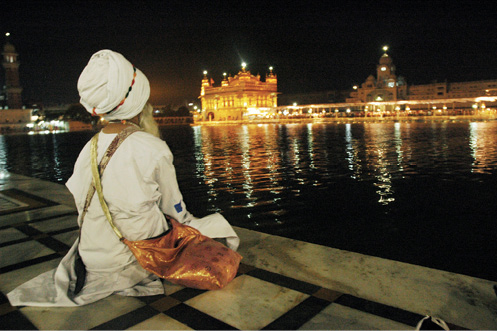
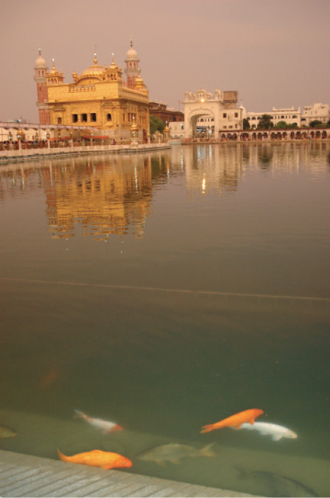
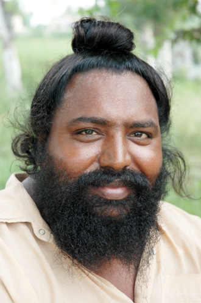
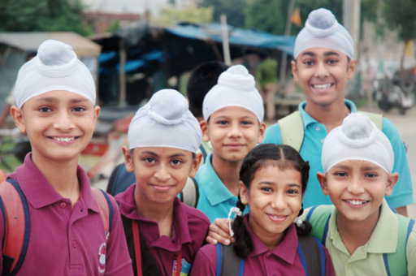

HİNDİSTAN, 2 AĞUSTOS
Tapınağa girerken yerlere kadar eğilen insanlar, çıkarken de geri geri ve yine eğilerek çıkıyorlar. Biz de çevremizdeki insanların yaptıklarını taklit ediyoruz. Bu kutsal tapınağa arkalarını dönmek büyük saygısızlık onlar için. Amritsar kentindeki Altın Tapınak’tayız. Amritsar ismi bu tapınağın bahçesindeki dev göletten geliyor.
Bahçenin büyük bölümünü kaplayan “Amrit Sarovar” (Ölümsüzlük Havuzu) ve bu havuzun ortasında Sihlerin Peygamberleri “Guru Nanak Dev”in mezarı var. Amrit ise tanrıların içtiği, aydınlanmaya götüren bir çeşit ruhsal aydınlanma içkisiymiş.
Ayakkabılarımızı çıkarıyoruz, ayaklarımızı ve ellerimizi yıkıyor, saçlarımızı örtüyoruz. Erkekler dahil herkes saçını örtmek zorunda. Daha içeri girer girmez mistik bir hava kaplıyor içinizi. Saçları topuz yapılmış Sih çocukları ne kadar da sevimli. Sihleri yolda görünce hemen tanımanızı sağlayan, diğer Hintlilerden ayıran çok belirgin alameti farikaları var. Bunlar hiç kesmedikleri saçları, ahşap veya fildişi tarak taşımaları, ne olduğunu tam bilmediğimiz bir çeşit iç çamaşırı giymeleri, kollarına kalın bilezikler takmaları ve geniş ağızlı, karga burunlu kamalar taşımaları. Bu kamalar, ileride hangisinin ne olduğunu unutacağımıza emin olduğum yerel isimleriyle Kesha, Kangha, Kaccha, Kara, Kirpan diye adlandırılıyor. Yaşlılar, uzun sakalları, bir Osmanlı kavuğunun içini dolduracak kadar uzun, topuz şeklinde toplanmış saçlarıyla ne kadar saygı uyandırıcı. Erkekler de saç ve sakallarını hiçbir zaman kesmiyor.
Sihler Hindistan’ın en nezih topluluğu olarak biliniyorlar. Dinleri Müslümanlık, Hıristiyanlık, Budizm ve Hinduizmin bir karışımı olarak tarif ediliyor. Erkeklerin saç ve sakallarını kesmemeleri, kadınların hançer taşıması önemli dini kurallarından. Soldan sağa doğru tavaf yapan insanlara katılıyoruz. Az ileride ışığın sudan yansıması içinde Altın Tapınak’ı gördüğümüz bir yere oturuyoruz. Olağanüstü bir an. Bu yolculukta en çok görmek istediğimiz yerdeyiz. Neden mi?
Çocukluk yıllarımda Altın Tapınak’a bir saldırı olmuştu. Birkaç fanatik onlarca insanı öldürmüştü canice. Daha ilkokula gittiğim yıllarda, evde misafirler de varken, izlediğim bu haber üzerine ağlamaya başladığımı hatırlıyorum. Önce kimseye belli etmemeye çalışarak, fark edilince de başka bir odaya kaçıp saklanarak. Erkek adam ağlar mı canım?

Hindistan, Amritsar
Şahsi eşyaların tümünün ufacık bir heybeye sığdığı bir yaşam kurabilmek

Hindistan Amritsar
Altın tapınağın büyüsüne kapılmış balıklar.

Hindistan, Jalandhar
İç dünyası yüzüne yansımış mutlu bir Sih.

Hindistan, Amritsar
Sihler arasında eğitim oranı yüksek.
İnsan ahlakının, kişiliğinin nasıl oluştuğunu, konuşmasının, yürüyüşünün kimlerin kopyası olduğunu, hangi olayların ileride kim olduğunu belirlediğini tam olarak bilemez elbette. Ama hatırladığım bu olay, benim “Öldürmeyeceksin” kuralını tüm benliğimde hissettiğim ve bugün kim olduğumu etkileyen en önemli olaylardan birisi. Gözüm açık gitmez denir ya, işte burayı görüp “Evet öldürmeyeceğim ve bana verilen bu yaşamı hak edeceğim” diye tekrar tekrar söz verdiğim bu anda, artık tek yapabileceğim şey gözyaşı dökmek. İnsan bir çocukluk hayali karşısında sadece ağlayabilir. Ve bunu ancak bir çocuk kadar saf yüreği olanlar anlayabilir.